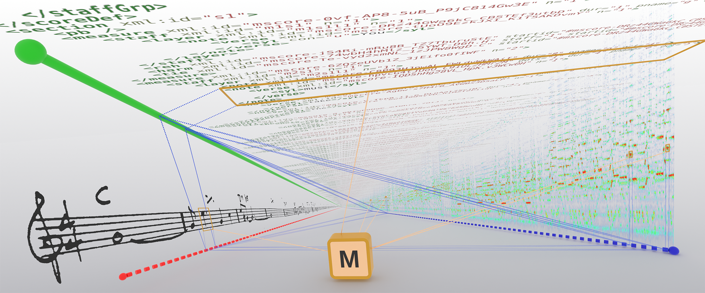

TimeToAlign!
A Cross-Domain Timeline Model for Music Information Retrieval and Digital Musicology
What is TimeToAlign!?
Music research relies on heterogeneous time-related data: scores, recordings, annotations, images, sensor data, and video. These artefacts differ in repertoire, completeness, format, granularity, and quality control. Combining them requires alignment—matching corresponding events across representations—which is expensive, error-prone, and rarely reusable.
TimeToAlign! addresses this by providing:
- A generalised cross-domain model for musical timelines and their alignments, grounded in three temporal domains (physical, logical, graphical) in both continuous and discrete variants.
- A working Python library (
timetoalign) implementing this model with typed timelines, loaders for common formats, conversion maps, and alignment primitives.
The model represents coordinate systems as nodes in a graph, connected by s within a timeline and objects across timelines. This structure enables coordinate transfer, annotation propagation, and alignment queries across arbitrarily many representations of the same musical content.
Documentation Structure
This documentation follows the Diataxis framework.
- Tutorials
-
Step-by-step notebooks that teach the
timetoalignlibrary from first principles, using real-world data. - How-To Guides
- Task-oriented recipes grouped by topic. Timelines, Events & Maps — How to Do Coordinate Math · How to Use Advanced Conversion Maps · How to Query Timestamps · How to Construct Timelines Manually · How to Load Data · How to Load Tabular Data · How to Work with Graphical Timelines · How to Transfer Annotations Between Graphical Analyses · How to Represent Areas of Page Images as Boxes · How to Build Beat Grids TimelineGroups — How to Align a Piano Roll (SUPRA) · How to Save and Load Timelines, Groups and Bundles AlignmentBundles — How to Create a Note Alignment · How to Align Multimodal Data (Beethoven) · How to Load the Vienna 4x22 Corpus · How to Load an Audio-to-Score Alignment Corpus and Compare Performances · How to Load a parangonada Note Alignment Across Several Performances · How to Load an MPM-Toolbox Project (Score, Modelled Performance, Observed Alignment) · How to Load an Audio-to-Audio Alignment (Listen Here!) In-depth Topics — How to Encode Song Genesis (Hendrix) · How to Load CSV/TSV with column_specs and field_specs
- Conceptual Model
- The full specification of TimeToAlign!’s cross-domain timeline model: temporal domains, coordinates, events, flow control, conversion maps, nested timelines, alignment, and matching. This is the authoritative reference for the model’s formal definitions and visual conventions.
- Glossary
- An alphabetical reference of all model terms, from AlignmentAnchor to WarpMap.
- API Reference
-
Auto-generated documentation for the
timetoalignPython package.
The Three Temporal Domains
At the heart of the model lies a simple observation: musical data can be categorised into three temporal domains, each representing a different modality through which music is experienced.
| Domain | Modality | Continuous | Discrete |
|---|---|---|---|
| Physical | Hearing | seconds | samples |
| Logical | Conceptualising | quarter notes, beats | ticks, divisions |
| Graphical | Seeing | metres, points | pixels |
A score, for instance, is both graphical and logical—it is itself an alignment between pixel coordinates and musical time. A performance is physical (audio samples or seconds) but encodes the logical structure of the score. Bridging these domains in a principled, reusable manner is what TimeToAlign! is for.
For the full specification, see the Conceptual Model.
Getting Started
The timetoalign library is available on PyPI. To install it:
pip install timetoalignThe library requires Python 3.11 or later.
Project Links
- Source Code: GitHub
- Notebooks: [README]
- Specimen Collection: Forthcoming. Watch this space!
- TISMIR Article: Time to Align! Modelling Musical Timelines for Music Information Retrieval and Digital Musicology
Please cite the published TISMIR article:
Hentschel, Johannes; Berndt, Axel; Cancino-Chacón, Carlos; Dixon, Simon; Foo, Anne; Gotham, Mark; Hu, Patricia; Köster, Maik; Martins, Felipe D.; Mauro, Davide A.; Müller, Meinard; Neuwirth, Markus; Pacha, Alexander; Page, Kevin R.; Peter, Silvan; Polyakov, Egor; Pugin, Laurent; Weigl, David M.; Weiß, Christof; and Widmer, Gerhard. 2026. "Time to Align! Modelling Musical Timelines for Music Information Retrieval and Digital Musicology." *Transactions of the International Society for Music Information Retrieval* 9 (1): 384--404. https://doi.org/10.5334/tismir.296.A BibTeX entry ships in the repository via the README Citing section and CITATION.cff.